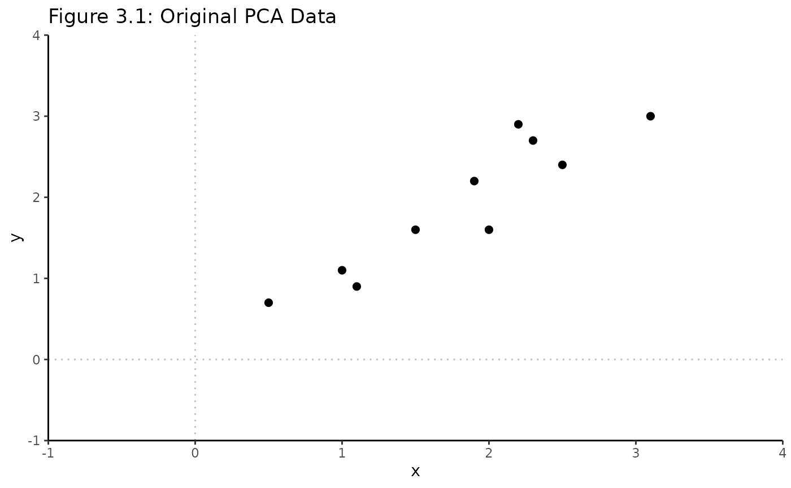
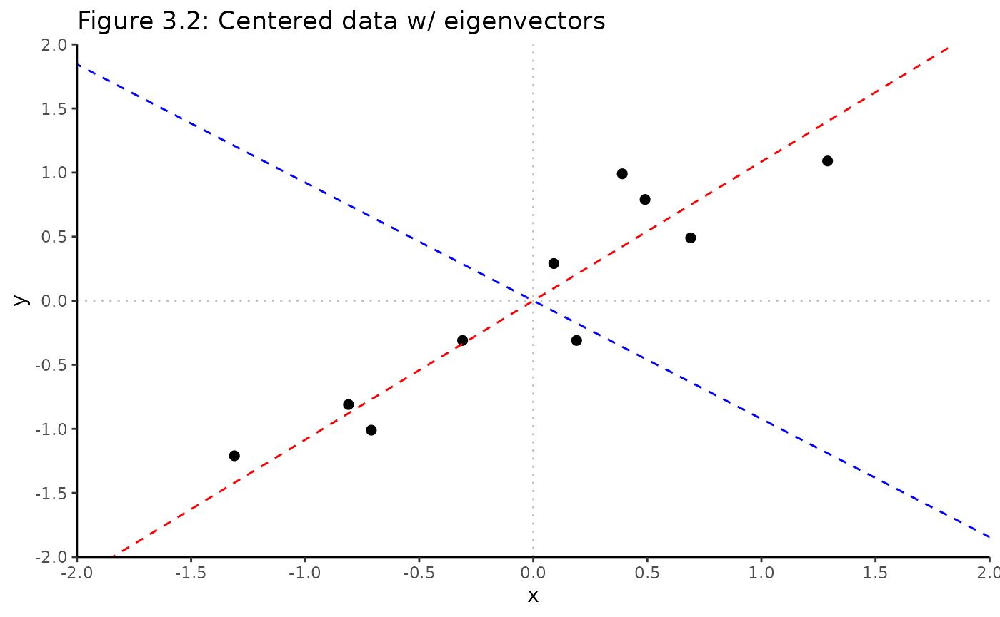
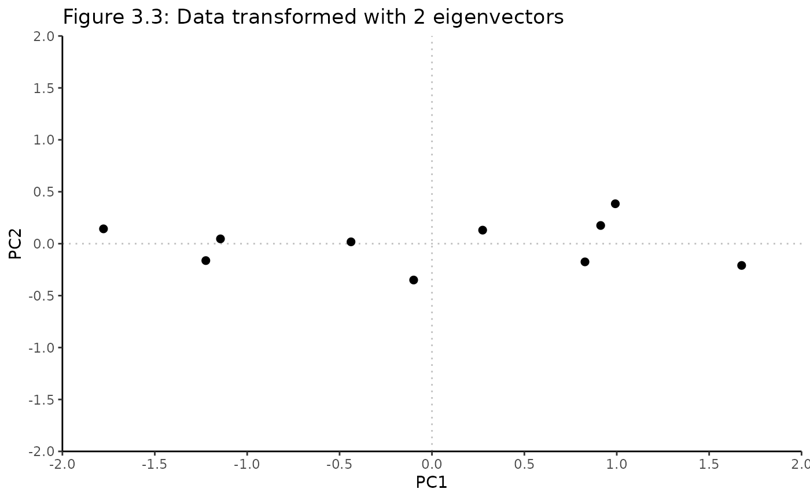
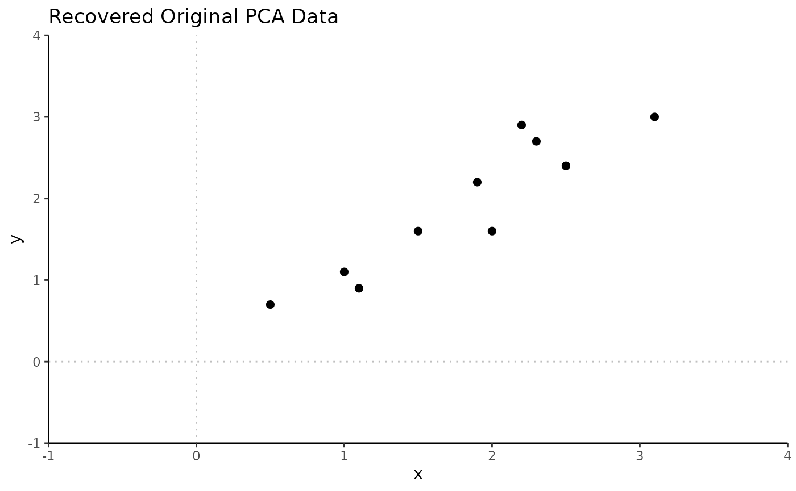
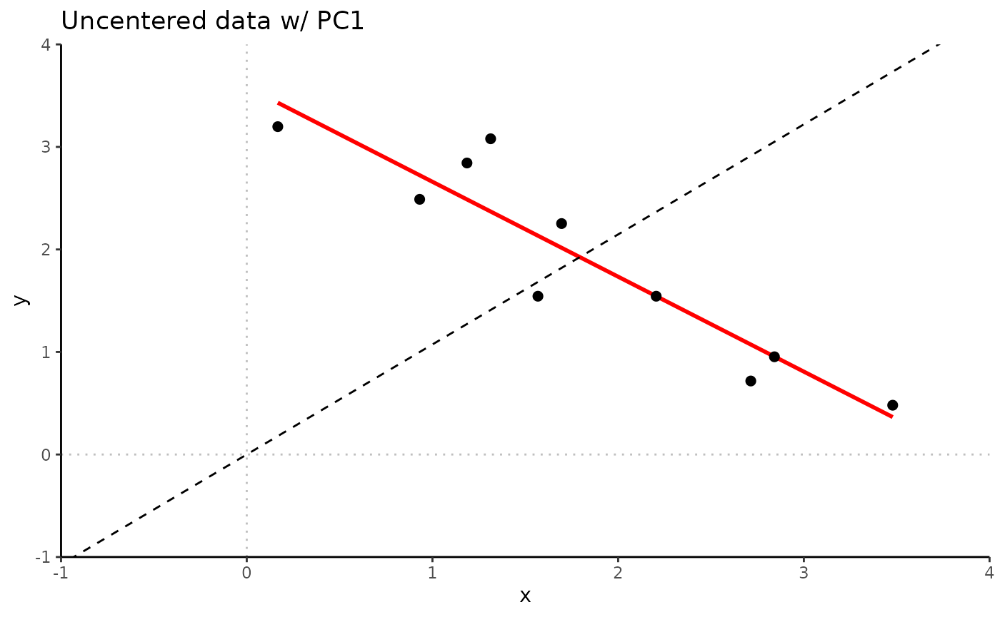
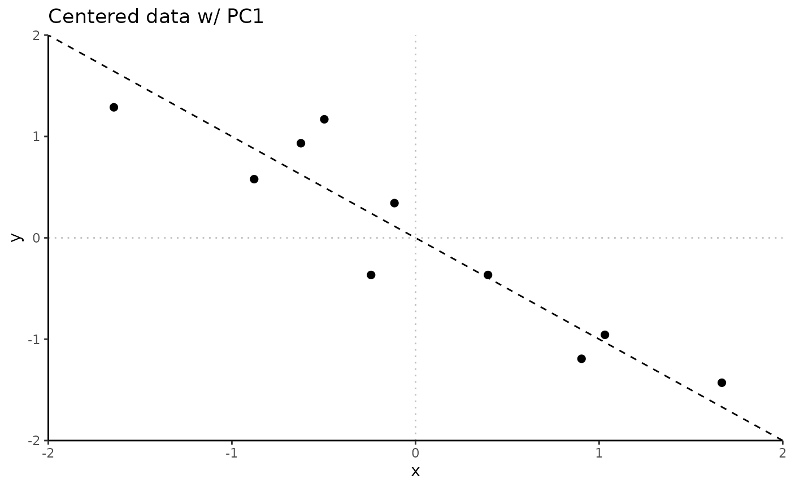

Principal Component Analysis (PCA) Walkthrough
Yi Jou (Ruby) Liao
Source:vignettes/PCA_Walkthrough.Rmd
PCA_Walkthrough.RmdBackground
Heavily adapted from Lindsay Smith’s PCA tutorial![1] HIGHLY recommend reading through to help develop intuitive understanding of PCA, starting from very basic math prerequisites.
Why?
- Identify patterns in high dimensional data
- Express data in way to highlight similarities + differences
- Patterns in data “compressed” to lower dimensions without much loss of information
Synonymous terms
- Dimension: feature, gene
- Sample: observation
- Adjusted: mean-adjusted, centered
- Scale: variance
Statistics
Variance
- Measure of spread in 1-dimensional data
\[var(X) = \frac{\Sigma_{i=1}^n (X_i - \bar{X})(X_i - \bar{X})}{n-1}\]
- \(X_i\): individual value
- \(\bar{X}\): (sample) mean of all values
- \(n\): sample size
Covariance
- Found between 2 dimensions
- Measure of how much the dimensions vary from the mean with respect to each other
- \(cov\) btwn one dimension and self is the variance
- \(cov(X, Y) = cov(Y, X)\) because multiplication is commutative
\[cov(X) = \frac{\Sigma_{i=1}^n (X_i - \bar{X})(Y_i - \bar{Y})}{n-1}\] Interpretation
- Sign: positive or negative
- Positive: both dimensions increase together
- Negative: as one dimension increases, the other decreases
- Zero: two dimensions are independent of each other
Covariance matrix
- \(n\)-dimensional set: \(\frac{n!}{(n-2)! \cdot 2}\) total pairwise covariance values
- Represent all covariances as covariance matrix
\[C^{n \times n} = (c_{i, j}, c_{i, j} = cov(Dim_i, Dim_j))\]
- \(C^{n \times n}\): matrix w/ \(n\) rows & \(n\) columns (square)
- \(Dim_x\): \(x\)th dimension
- Entry in \((2, 3)\) of covariance matrix is \(cov(Dim_2, Dim_3)\)
- Main diagonal: variance of dimension
- Symmetrical about the main diagonal
Ex. Covariance matrix for 3 dimensions/features \(x\), \(y\), \(z\)
\[C = \pmatrix{ cov(x,x) = var(x) & cov(x,y) & cov(x,z) \\ cov(y,x) & cov(y,y) = var(y) & cov(y,z) \\ cov(z,x) & cov(z,y) & cov(z,z) = var(z)}\]
Matrix algebra
Eigenvectors
“Direction” part of PCA decomposition, the angle of the orthogonal “rotation” which PCA amounts to.
- Can only be found for square matrices
- Not all square matrices have eigenvectors
- In \(n \times n\) matrix w/ eigenvectors, there are \(n\) eigenvectors
- Even if scaled by some amt before multiplication, still get multiple
as a result
- Length of vector doesn’t affect if it’s an eigenvector or not, direction does
- To keep eigenvector standard, usually scale all to length = 1 (unit length)
- All eigenvectors of matrix are perpendicular / orthogonal
- Can express data in terms of eigenvectors, instead of expressing in terms of \(x\) and \(y\) axes
- Core concept of PCA!
Non-eigenvector:
\[\pmatrix{2 & 3 \\ 2 & 1} \times \pmatrix{1 \\ 3} = \pmatrix{11 \\ 5}\]
Eigenvector:
\[\pmatrix{2 & 3 \\ 2 & 1} \times \pmatrix{3 \\ 2} = \pmatrix{12 \\ 8} = 4 \times \pmatrix{3 \\ 2}\]
Scaled eigenvector is still an eigenvector:
\[2 \times \pmatrix{3 \\ 2} = \pmatrix{6 \\ 4}\] \[\pmatrix{2 & 3 \\ 2 & 1} \times \pmatrix{6 \\ 4} = \pmatrix{24 \\ 16} = 4 \times \pmatrix{6 \\ 4}\]
Scaling eigenvector to unit length:
Eigenvector: \(\pmatrix{3 \\ 2}\) -> Length = \(\sqrt{(3^2 + 2^2)} = \sqrt{13}\) -> Scaled: \(\pmatrix{3 \\ 2} \div \sqrt{13} = \pmatrix{\frac{3}{\sqrt{13}} \\ \frac{2}{\sqrt{13}}}\)
General steps
- Get \(n\)-dimensional data set
- Standardize data
- Calculate covariance matrix
- Calculate eigenvectors + eigenvalues of covariance matrix
- Choose components + form a feature vector
- Derive new data set
2D PCA walkthrough
Replicating Lindsay Smith’s PCA tutorial [1], step by step.
Get \(n\)-dimensional data set
- 2-dimensional / 2 features
- \(x\) dimension & \(y\) dimension
Data <- data.frame(
x = c(2.5, 0.5, 2.2, 1.9, 3.1, 2.3, 2, 1, 1.5, 1.1),
y = c(2.4, 0.7, 2.9, 2.2, 3.0, 2.7, 1.6, 1.1, 1.6, 0.9)
)
Data
#> x y
#> 1 2.5 2.4
#> 2 0.5 0.7
#> 3 2.2 2.9
#> 4 1.9 2.2
#> 5 3.1 3.0
#> 6 2.3 2.7
#> 7 2.0 1.6
#> 8 1.0 1.1
#> 9 1.5 1.6
#> 10 1.1 0.9Visualize original, unadjusted data
Rubrary::plot_scatter(
df = Data,
xval = "x", yval = "y",
title = "Figure 3.1: Original PCA Data",
guides = F, cormethod = "none"
) +
geom_vline(xintercept = 0, linetype = "dotted", alpha = 0.25) +
geom_hline(yintercept = 0, linetype = "dotted", alpha = 0.25) +
scale_x_continuous(limits = c(-1, 4), expand = c(0, 0)) +
scale_y_continuous(limits = c(-1, 4), expand = c(0, 0))
Standardize / adjust data
- Center data: subtract mean for each point per dimension
- \(x - \bar{x}\), \(y - \bar{y}\)
- Adjusted data set overall has mean of 0
# Mean adjust / center
DataAdjust <- Data %>%
scale(., center = T, scale = F) %>%
as.data.frame()
DataAdjust
#> x y
#> 1 0.69 0.49
#> 2 -1.31 -1.21
#> 3 0.39 0.99
#> 4 0.09 0.29
#> 5 1.29 1.09
#> 6 0.49 0.79
#> 7 0.19 -0.31
#> 8 -0.81 -0.81
#> 9 -0.31 -0.31
#> 10 -0.71 -1.01Calculate covariance matrix
# Covariance matrix
cov_mtx <- cov(DataAdjust)
cov_mtx
#> x y
#> x 0.6165556 0.6154444
#> y 0.6154444 0.7165556Eigendecomposition of covariance matrix
- Covariance matrix is square -> can find eigenvectors + eigenvalues
- Eigenvectors are unit eigenvectors
Choosing components
- 2 dimensional data > \(2 \times 2\) covariance matrix -> 2 eigenvectors
- Ordering eigenvectors by highest to lowest eigenvalues is same as ordering by significance
- For larger dimensional data, can exclude uninformative / lower eigenvalue eigenvectors
- Feature vector is formed by matrix of vectors constructed by
eigenvectors kept
- \(FeatureVector = \pmatrix{eig_1 & eig_2 & eig_3 & ... & eig_n}\)
FeatureVector = cbind(eigenvectors[,1], eigenvectors[,2])
FeatureVector
#> [,1] [,2]
#> [1,] 0.6778734 -0.7351787
#> [2,] 0.7351787 0.6778734Visualizing eigenvectors / PCs on adjusted data
- Eigenvectors are perpendicular, lines that characterize data
- Eigenvector with largest eigenvalue is PC1 (blue dashed line)
- Aligns with maximum variance in data, most significant relationship btwn data dimensions
- 2nd largest eigenvalue is PC2 (red dashed line)
Rubrary::plot_scatter(
df = DataAdjust, # Mean adjusted data
xval = "x", yval = "y",
title = "Figure 3.2: Centered data w/ eigenvectors",
guides = F, cormethod = "none"
) +
geom_vline(xintercept = 0, linetype = "dotted", alpha = 0.25) +
geom_hline(yintercept = 0, linetype = "dotted", alpha = 0.25) +
geom_abline(intercept = 0, linetype = "dashed", color = "red",
slope = eigenvectors[2,1] / eigenvectors[1,1]) + # EV 1 / PC1
geom_abline(intercept = 0, linetype = "dashed", color = "blue",
slope = eigenvectors[2,2] / eigenvectors[1,2]) + # EV 2 / PC2
scale_x_continuous(limits = c(-2, 2), expand = c(0, 0), breaks = seq(-2, 2, length.out = 9)) +
scale_y_continuous(limits = c(-2, 2), expand = c(0, 0), breaks = seq(-2, 2, length.out = 9))
Deriving new data set
The final data (“scores”) can be found by using the FeatureVector / selected eigenvectors to rotate the centered data.
FinalData <- t(t(FeatureVector) %*% t(DataAdjust)) %>%
as.data.frame() %>%
dplyr::rename(PC1 = V1, PC2 = V2)
FinalData
#> PC1 PC2
#> 1 0.82797019 -0.17511531
#> 2 -1.77758033 0.14285723
#> 3 0.99219749 0.38437499
#> 4 0.27421042 0.13041721
#> 5 1.67580142 -0.20949846
#> 6 0.91294910 0.17528244
#> 7 -0.09910944 -0.34982470
#> 8 -1.14457216 0.04641726
#> 9 -0.43804614 0.01776463
#> 10 -1.22382056 -0.16267529Visualizing the final data
- PC1, now the x-axis, is along the direction of highest variance in data
- PC2, now the y-axis, is orthogonal / perpendicular to PC1 and is along the direction of 2nd highest variance in the data
PCA_scores_manual <- Rubrary::plot_scatter(
df = FinalData, # Mean adjusted data
xval = "PC1", yval = "PC2",
title = "Figure 3.3: Data transformed with 2 eigenvectors",
guides = F, cormethod = "none"
) +
geom_vline(xintercept = 0, linetype = "dotted", alpha = 0.25) +
geom_hline(yintercept = 0, linetype = "dotted", alpha = 0.25) +
scale_x_continuous(limits = c(-2, 2), expand = c(0, 0),
breaks = seq(-2, 2, length.out = 9)) +
scale_y_continuous(limits = c(-2, 2), expand = c(0, 0),
breaks = seq(-2, 2, length.out = 9))
PCA_scores_manual
Transforming back to original data
RowFinalData = t(FinalData)
RowDataAdjust_1 = solve(t(FeatureVector)) %*% RowFinalData
RowDataAdjust_1
#> [,1] [,2] [,3] [,4] [,5] [,6] [,7] [,8] [,9] [,10]
#> [1,] 0.69 -1.31 0.39 0.09 1.29 0.49 0.19 -0.81 -0.31 -0.71
#> [2,] 0.49 -1.21 0.99 0.29 1.09 0.79 -0.31 -0.81 -0.31 -1.01
RowDataAdjust_2 = FeatureVector %*% RowFinalData
RowDataAdjust_2
#> [,1] [,2] [,3] [,4] [,5] [,6] [,7] [,8] [,9] [,10]
#> [1,] 0.69 -1.31 0.39 0.09 1.29 0.49 0.19 -0.81 -0.31 -0.71
#> [2,] 0.49 -1.21 0.99 0.29 1.09 0.79 -0.31 -0.81 -0.31 -1.01
# "Uncenter" by adding back original means
OriginalMean = c(mean(Data[,1]), mean(Data[,2]))
OriginalData = t(RowDataAdjust_2) %>%
as.data.frame() %>%
dplyr::rename(x = V1, y = V2) %>%
mutate(x = x + OriginalMean[1],
y = y + OriginalMean[2])
OriginalData
#> x y
#> 1 2.5 2.4
#> 2 0.5 0.7
#> 3 2.2 2.9
#> 4 1.9 2.2
#> 5 3.1 3.0
#> 6 2.3 2.7
#> 7 2.0 1.6
#> 8 1.0 1.1
#> 9 1.5 1.6
#> 10 1.1 0.9
# Visualize recovered data
Rubrary::plot_scatter(
df = OriginalData,
xval = "x", yval = "y",
title = "Recovered Original PCA Data",
guides = F, cormethod = "none"
) +
geom_vline(xintercept = 0, linetype = "dotted", alpha = 0.25) +
geom_hline(yintercept = 0, linetype = "dotted", alpha = 0.25) +
scale_x_continuous(limits = c(-1, 4), expand = c(0, 0)) +
scale_y_continuous(limits = c(-1, 4), expand = c(0, 0))
Rubrary
Rubrary::run_PCA is a wrapper for
stats::prcomp.
PCA <- Rubrary::run_PCA(
df = t(Data), # 1 point per column
center = T, scale = F, tol = 0, screeplot = F
)
# Visualize
Rubrary::plot_PCA(
PCA,
title = "PCA Scores",
) +
geom_vline(xintercept = 0, linetype = "dotted", alpha = 0.25) +
geom_hline(yintercept = 0, linetype = "dotted", alpha = 0.25) +
scale_x_continuous(limits = c(-2, 2), expand = c(0, 0),
breaks = seq(-2, 2, length.out = 9)) +
scale_y_continuous(limits = c(-2, 2), expand = c(0, 0),
breaks = seq(-2, 2, length.out = 9))
PCA output
Scores
- Coordinates of individuals (observations) on principal components
- Original data orthogonally rotated by eigenvector directions
- In
stats::prcomp, this is thexoutput
Loadings
- Eigenvectors “inoculated” w/ info about variability or magnitude of the rotated data
- Association coefficients between components + variables
- Loadings: covariances/correlations btwn original variables + unit-scaled components
- Generally use loadings instead of eigenvectors when interpreting components
- In
stats::prcomp, can use therotationoutput scaled/multiplied by thesdevoutput which is the square roots of the eigenvalues of the covariance/correlation matrix
Biplots
PCA: singular value decomposition \[X = USV^\intercal\]
Examples based on iris dataset from this thread:

Biplot scores
Two first principal components are plotted as a scatter plot, i.e. first column of \(\bf{U}\) is plotted against its second column.
Possible normalizations:
- Columns of \(\bf{U}\): principal components scaled to unit sum of squares
- Columns of \(\bf{U}\sqrt{n - 1}\): standardized principal components (unit variance)
- Columns of \(\bf{US}\): “raw”
principal components (projections on principal directions)
-
prcompobjectxoutput
-
Biplot loadings
Original variables are plotted as arrows; i.e. \((x, y)\) coordinates of an \(i\)-th arrow endpoint are given by the \(i\)-th value in the first and second column of \(\bf{V}\).
Possible normalizations:
- Columns of \(\bf{VS}\): no valid interpretation
- Loadings: Columns of \(\bf{VS}/\sqrt{n-1}\)
-
loadings <- obj_prcomp$rotation %*% diag(obj_prcomp$sdev)- Where
obj_prcomp$sdevis square root of corresponding eigenvalues
- Where
- Useful interpretation
- Length of loading arrows \(\approx\) std dev of original variables
- Squared length \(\approx\) variance
- Scalar products between any two arrows \(\approx\) covariance between them
- Cosines of angles between arrows \(\approx\) correlations between original variables
- Length of loading arrows \(\approx\) std dev of original variables
-
- Eigenvectors: Columns of \(\bf{V}\): these are principal axes (aka
principal directions)
-
prcompobjectrotationoutput
-
Standardization
- Center feature means at 0
- Scale variance per feature to unit variance
In general, should standardize data (Z-score normalize) before PCA!
Centering
- PCA is a regressional model without intercept
- Principal components inevitably come through the origin
- Technically, PCA maximizes (by 1st PC) the sum-of-squared deviations
from the origin
- PCA only maximizes variance if data is preliminarily centered
Centering example
Using transformed version of previous 2D data set to emphasize effect
- Center / mean adjust
- Reflect across y-axis (positive -> negative correlation)
- Uncenter
Data2 <- Data %>%
scale(., center = T) %>%
as.data.frame() %>%
mutate(x = -1 * x) %>%
mutate(x = x + OriginalMean[1],
y = y + OriginalMean[2])
Data2
#> x y
#> 1 0.9312548 2.4888568
#> 2 3.4783424 0.4805781
#> 3 1.3133179 3.0795270
#> 4 1.6953811 2.2525887
#> 5 0.1671285 3.1976611
#> 6 1.1859635 2.8432589
#> 7 1.5680267 1.5437845
#> 8 2.8415705 0.9531143
#> 9 2.2047986 1.5437845
#> 10 2.7142161 0.7168462Scatter plot shows result of transformation. Red guide line is fitted linear regression line.
Rubrary::plot_scatter(
df = Data2,
xval = "x", yval = "y",
title = "Transformed PCA Data",
guides = T, cormethod = "none"
) +
geom_vline(xintercept = 0, linetype = "dotted", alpha = 0.25) +
geom_hline(yintercept = 0, linetype = "dotted", alpha = 0.25) +
scale_x_continuous(limits = c(-1, 4), expand = c(0, 0)) +
scale_y_continuous(limits = c(-1, 4), expand = c(0, 0))
PCA without centering
PCA2_NoCenter <- Rubrary::run_PCA(
df = t(Data2), # 1 point per column
center = F, scale = F, tol = 0, screeplot = F
)
# Extract eigenvectors
evs_NoCenter <- PCA2_NoCenter$rotationPlotting the first eigenvector (dashed line) with uncentered data shows the 1st principal component piercing the cloud of points through the origin, and not along the main direction of the cloud.
Rubrary::plot_scatter(
df = Data2, # Uncentered data
xval = "x", yval = "y",
title = "Uncentered data w/ PC1",
guides = T, cormethod = "none"
) +
geom_vline(xintercept = 0, linetype = "dotted", alpha = 0.25) +
geom_hline(yintercept = 0, linetype = "dotted", alpha = 0.25) +
geom_abline(intercept = 0, linetype = "dashed",
slope = evs_NoCenter[2,1] / evs_NoCenter[1,1]) + # EV / PC 1
scale_x_continuous(limits = c(-1, 4), expand = c(0, 0)) +
scale_y_continuous(limits = c(-1, 4), expand = c(0, 0))
PCA with centering
PCA2_Center <- Rubrary::run_PCA(
df = t(Data2), # 1 point per column
center = T, scale = F, tol = 0, screeplot = F
)
# Extract eigenvectors
evs_Center <- PCA2_Center$rotationWith centered data, the first eigenvector (PC1) crosses the origin along the direction of the cloud of points.
Rubrary::plot_scatter(
df = as.data.frame(scale(Data2, center = T)), # Centered data
xval = "x", yval = "y",
title = "Centered data w/ PC1",
guides = F, cormethod = "none"
) +
geom_vline(xintercept = 0, linetype = "dotted", alpha = 0.25) +
geom_hline(yintercept = 0, linetype = "dotted", alpha = 0.25) +
geom_abline(intercept = 0, linetype = "dashed",
slope = evs_Center[2,1] / evs_Center[1,1]) + # EV / PC1
scale_x_continuous(limits = c(-2, 2), expand = c(0, 0)) +
scale_y_continuous(limits = c(-2, 2), expand = c(0, 0))
Scaling
Somewhat subjective depending on what you’re interested in investigating.
Not scaling: performing PCA on covariance matrix
- Generally okay if variable scales are similar or variables have same unit of measure
Scaling: performing PCA on correlation matrix
- Generally preferred if variable scales are different or variables have different unit of measure
- PCA on correlation mtx is SAME as PCA with standardization of each variable
Varimax
From
@ttnphns on Stack Exchange!! 
“Unstandardizing” scores
Links
- Cross Validated: How to compute varimax-rotated principal components in R?
-
Cross
Validated: Is PCA followed by a rotation (such as varimax) still
PCA?
- REALLY GOOD ANSWERS explaining math + consequences of rotation on raw scores + eigenvectors vs. std scores + loadings
- [amoeba?] answer
- [ttnphns?] answer